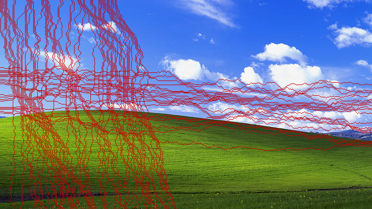
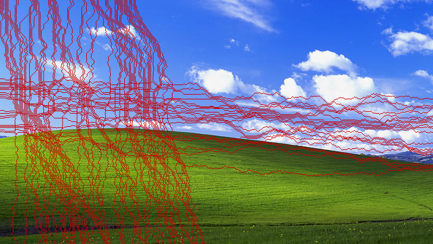

Nicolas Fernandez Baigun
Computer Science + Statistics @ Brown University
Computer Science + Statistics @ Brown University
| Preferred Name | Nico Fernandez Baigun |
|---|---|
| Pronouns | he/him |
| Age | 19 |
| Hometown | Weston, FL |
I am a sophomore at Brown University planning to major in Computer Science and Statistics. I'm looking to gain experience coding in different languages, develop skills to analyze big data, and seek opportunities to apply my analytical and critical thinking skills.
In my spare time, I enjoy making music (having played alto saxophone for 8+ years), working on puzzle hunts, and learning in general. Being from Argentina and having the opportunity to live in Spain, Taiwan, and the United States has also helped me be more culturally diverse and influenced how I live.
A 3D POV Game of PacMan

I made this game in Unity. It is essentially the original PacMan game, but you are playing it in 3D from PacMan's Point of View. To make it somewhat different, I also added an underground dimension where everything is inversed, which you can access by going into the Ghost House, along with some other mechanics to make the player experience better.
Currently only supported in MacOS and Windows.
View this project in GitHubTurns a collection of articles into a custom search engine
The custom search engine works by first processing the wiki file. The collection of articles/pages are in an xml file, with each page having a title, id, and text. All the words in the title and text are then stripped to the root word and then used to populate various data structures that are then used for determining importance.
Using a combination of word frequeny in each page and the entire wiki, it calculates the importance of each term in each page with the Term Frequency - Inverse Document Frequency (tf-idf) algorithm. It then also sees how many times a page is linked to/from in the wiki, and uses a PageRank algorithm to determine how authoritative a page is. It then combines both of these importance values to determine how relevant a document is to the wiki.
To complete the search engine, a querier is used to process search queries, score documents against queries based on the term relevance and PageRank, and then return the 10 documents with the highest scores.
Above is an example of search results for some terms in a small wiki used for testing.
Resizes images without losing meaningful content
 

Seamcarve works by turning an image into an array of rgb values, and then finds which pixels have the least difference in rgb between its neighbors. After doing this, using a technique called dynamic programming, it starts finding seams spanning the entire image that would affect the image the least if they were to be removed. These seams are the ones highlited in red in the above example images. The number of seams removed are specified by the user to resize the image to the desired size.
The final image shows the results of this content-aware image resizing.
Website portfolio to show my skills, projects, and experience

This is pretty simple, you're looking at it right now
View this project in GitHubFinds the best travel route based on your needs
Travel Planner uses Breadth First Search (BFS) and Dijkstra algorithms to calculate what travel route best suites your needs, based on origin, destination, and whether you want the cheapest, fastest, or most direct route.
It uses a command line interface as its UI, with 4 commands: load, cheap, fast, direct. To use Travel Planner, you must first 'load' the graph by feeding it 2 csv files with city names and transport options. It uses these files to populate the graph.
After loading the graph, the user can pick whether they want the cheapest, fastest, or most direct route, as well as the origin and destination. The 'cheap' command uses the Dijkstra algorithm with the price as the weight. The 'fast' command uses the Dijkstra algorithm with time as the weight. The 'direct' command uses the BFS algorithm. Some examples are shown in the images above.
Othello multiplayer game with computer players
Local multiplayer game of Othello that has human/human, human/computer, and computer/computer compatibility.
This project uses a MiniMax algorithm that evaluates the results of all possible moves with board weights and possible score. There are 3 computer levels, with a level-n computer looking n-moves deep before making the best move
The computer player uses a custom tree-like data structure that contains the current move it's evaluating, the score of that move, and a list of all possible moves that the other player could make after playing that move. After populating the data, with the height of the tree being the computer level, it finds which move would result in the best score/worst opponent score, and then plays it.
Predicts object attributes based on previous data
ML Decision Tree uses a basic Machine Learning model to receive training data and later predict a target attribute by building a tree-like stucture to split on different atrributes to eventually arrive at its decision.
The images above show an example of this process, where given a dataset of fruits/vegetables, it uses attributes such as color, protein, and calories to predict whether the food is a fruit or vegetable.
After parsing a csv file with the training data on it, the model randomly selects different attributes to 'split' on, which then adds a node to the tree, and can either end with a leaf or keep branching out on more attributes. Running this model on various training sets averaged over 95% accuracy on training data and over 75% accuracy on testing data, with some of the larger datasets reaching almost 90% accuracy on testing data.
Writes better equations to win at Graphwar
This tool outputs the equation for a graph that will help you win in the game Graphwar. The equation works by stringing together a lot of equations of the type (_)/(1+e^(-100*(x+_))) to essentially make a graph that can move precisely through the coordinate plane.
View this project in GitHubI am currently working closely with other software developers in a collaborative environment to develop, prototype and release cutting-edge AI technologies. My contributions so far include debugging and finalizing a website/Twitter blog that scrapes RSS feeds and summarizes government news from various sources, working with Python libraries such as Pandas and Requests, and APIs such as Tweepy, OpenAI, Ujeebu, and TLDRThis. I am also working on a Flutter app that helps generate, rate, and combine article headlines until clients are happy with them.
In charge of writing the Statistics Team round and solutions for the 2024 Florida Association of Mu Alpha Theta States convention. I was confidently able to do this after helping my team place 1st at every Statistics competition in 2021, and 2nd individually at the States convention.
I created, organized, and taught lessons to Mu Alpha Theta students in grades 4-6 at my school to prepare them for math competitions throughout the year. Later continued building and teaching curriculum catered specifically to Statistics students, who placed in the top 2 teams of the state consistently throughout the year.
Feel free to contact me below.
I'm always happy to discuss projects, business opportunities, or just chat in general.